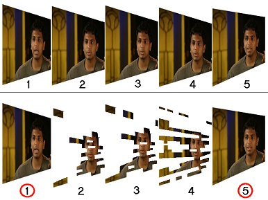
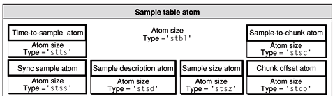

# 30,000 fps Nginx
## To Russia with Love
Demuxed 2021
Tracey Jaquith
slides: tracey.dev.archive.org
---
@tracey_pooh 🧸
Internet Archive 🏛️
TV Architect
· video/audio · devops · javascript ·
slides: https://tracey.dev.archive.org
---
## WHAT: server-side mp4 clipping?
Losslessly serve smaller piece of a video.
- Parse & rewrite header (moov atom)
- Change table sizes
- Update offsets to A/V packets
---
## WHY: server-side mp4 clipping?
- 1hr HD TV show (~2mbps)
- 4MB moov atom / header
- To play 1 frame for 2h show
- need to download 8MB of header first
- 2min clip
- 150K header
---
### Framing the problem
• IFrame / Keyframe
· full image - like a JPEG
• Predicted Frame
· smaller piece(s) referencing other frames earlier in time
• Bi-directional frame
· can reference prior or later frames
---
### Keyframes

^ ^ ^ ^
Keyframe · Predicted Frame · Bidirectional Frame · Keyframe
credit: [www.canon.com.hk](https://www.canon.com.hk/cpx/en/technical/va_EOS_Movie_Compression_Options_All_I_and_IPB.html)
---
### Predicted frames

credit: [nickyguides.digital-digest.com](https://nickyguides.digital-digest.com/keyframes.htm)
---
### I P B frames
 credit: [wikipedia](https://en.wikipedia.org/wiki/Inter_frame#Typical_Group_Of_Pictures_%28GOP%29_structure)
---
## Server clipping problems
• Keyframes occur every ~3-5 seconds
credit: [wikipedia](https://en.wikipedia.org/wiki/Inter_frame#Typical_Group_Of_Pictures_%28GOP%29_structure)
---
## Server clipping problems
• Keyframes occur every ~3-5 seconds
• Typical 10s max between keyframes
• You could seek 9.9s before a keyframe 🥺
BUT! 🍑
• Browser needs a keyframe to have all the info to start playing 🤦♀️
---
## Roll the Clip!
---
## first 3 keyframes (PTS time):
0.000000s
6.039367s
10.710700s
---
### nginx module: `mod_h264_streaming`
You ask for clip: `start=8` (* keyframes at 6s and 10.7s)
.. module starts *instead* at keyframe 6s in
[](https://archive.org/~tracey/ng.mp4?start=6.039&end=13)
(not right start point)
---
### nginx module: `mp4`
You ask for clip: `start=8` (* keyframes at 6s and 10.7s)
.. module starts at 8s
[](https://archive.org/~tracey/ng.mp4?start=8&end=13)
(frozen/black until 1st keyframe)
---
## Why you Talky?
Server-side mp4 lossless *Precise* seeking is hard.
Most of the time, you jump between keyframes.
💡 Idea! Speedup the FPS of the video frames *just before* the exact wanted seek point.
---
### The Tracey Way 👩🚀
You ask for clip: `start=8` (* keyframes at 6s and 10.7s)
patched module starts at keyframe 6s in
.. but first 2s of frames are at ⚡ 30,000 fps 😃
[](https://archive.org/~tracey/ng.mp4?start=8&end=13&exact=1)
---
## xxx - points to factor in...
- figure out how to patch & test mp4
- `hg` mercurial
- email devl list - `patchbomb`
- 3500 line single `.c` file
- best C code I've ever seen
- reads top-to-bottom
- airtight
- intimidating
- exciting
---
## xxx - points to factor in...
- 1st guy: "why not just use a smart client/browser?"
- misses entire point --> "then why would i ever use nginx mp4 module??"
- "good point.."
- gets me to Roman, the 4th most committer at nginx ; 2nd most committer in mp4 module
---
## xxx - points to factor in...
- back & forth, with Roman, who wizardly points out I can use ...
- STTS - Time-To-Sample atom
- parse STSS - Sync Sample entries - list of keyframs
- each STSS entry is a [duration][count] tuple
- start with first frame, end once hit desired start
- if desired start is keyframe, nothing to do!
- otherwise, "save" prior keyframe location
- now we know how many frames to move:
- from 30fps, duration 1001 (typical)
- to duration 1, ~30000fps (typical)
---
## xxx - points to factor in...
- my patch: https://raw.githubusercontent.com/traceypooh/mod_h264_streaming--intra-keyframes/master/nginx-mp4.patch: 158 lines
- 6/15/2021
- updated patch: `tracey-2021-06-15.patch` (138 lines)
- `exact_video_adjustment()`
- revised patch: 234 lines
- mentioned: "your patch first line exceeds 67 char limit".. :(
- http://nginx.org/en/docs/contributing_changes.html
- changes name / new config setting to: `mp4_seek_key_frame`
```ini
location /video/ {
mp4;
mp4_buffer_size 1m;
mp4_max_buffer_size 5m;
mp4_limit_rate on;
mp4_limit_rate_after 30s;
mp4_seek_key_frame on;
}
```
https://nginx.org/en/docs/http/ngx_http_mp4_module.html
- `ngx_http_mp4_rewind_stts_data()`
- "Based on a patch by Tracey Jaquith."
---
## xxx - points to factor in...
- "Can you test this?"
- 2 months at 50% time go by..., exercising 1-3h/day, losing 15 pounds ;-)
- 9/7/2021 ( https://forum.nginx.org/read.php?29,291866,292368#msg-292368 )
- tests heavily on linux and macosx -- looks good!
- "If I won't end up being a committer, can you credit Internet Archive, too?" :)
- "Based on a patch by Tracey Jaquith, Internet Archive"
- "We had a discussion here about enabling this feature by default or maybe making this the only supported behavior. What do you think?" 9/9/2021
---
## .hg/hgrc
```ini
[paths]
default = http://hg.nginx.org/nginx
[ui]
username = Tracey Jaquith
[extensions]
hgext.patchbomb =
[email]
to = nginx-devel@nginx.org
from = Tracey Jaquith
method = smtp
[smtp]
host = mail.archive.org
tls = starttls
username = tracey@archive.org
```
- hg commit
- hg log |head # get hash like: 7872:1879d49fe0cf
- hg email --test 7872:1879d49fe0cf
- hg email 7872:5da9c62fa610
---
## The Patch
Add optional "mp4_exact_start" nginx config off/on to show video between keyframes.
```text
archive.org has been using mod_h264_streaming with a similar "exact start"
patch from me since 2013.
We just moved to nginx mp4 module and are using this patch.
The technique is to find the video keyframe just before the desired "start" time,
and send that down the wire so video playback can start immediately.
Next calculate how many video samples are between the keyframe and desired
"start" time and update the STTS atom where those samples move the duration
from (typically) 1001 to 1.
This way, initial unwanted video frames play at ~1/30,000s --
so visually the video & audio start playing immediately.
```
```text
Tested on linux and macosx.
You can see an example before/after here
(nginx binary built with mp4 module + patch):
```
https://archive.org/~tracey/ng.mp4?start=8&end=30
https://archive.org/~tracey/ng.mp4?start=8&end=30&exact=1
(this is me: https://github.com/traceypooh )
---
## Atoms
- update STTS - Time-To-Sample
- update stss - Sync Sample
- List of sample number of each **keyframe**
- update ctts - Composition Time to Sample
- update stsc - Sample-To-Chunk
- update stsz - Sample Size
- co64
- stco - Chunk Offset
- stbl - Sample Table
- minf - Media INFormation
- mdia - Media
- trak - Track
- mdat - Media DATa
---
## Atoms

- _update STTS - Time-To-Sample_
- List of samples
- a table of [8 byte] entries, each entry is:
- [4B] sample count
- [4B] sample duration
- Often for simple mp4 this is a _single entry_ table:
- [4B] number of frames/samples in video
- [4B] 1001 duration
US TV - 29.97 fps == 30,000 / 1001 (30000 is timescale)
---
## Lossless
Let's hack some (dyslexia unfriendly) STTS and STSS moov atoms...
---
http://nginx.org/en/docs/contributing_changes.html
The commit message should have a single-line synopsis followed by verbose description after an empty line. It is desirable that the first line is no longer than 67 symbols. The resulting changeset as a patch can be obtained using the hg export command ..
---
Getting Sources
Mercurial is used to store source code. The repository can be cloned with the following command:
hg clone http://hg.nginx.org/nginx
---
# 12y ago
https://git.archive.org/ia/petabox/-/blob/6614fbaaf77c7718dad1f5ff393029d2b2f4c2db/sw/bin/nginx-README.txt
```text
nginx v0.8
mod_h264_streaming-2.1rc2
if !start && !end -- return .mp4 AS IS (some user .mp4 uploads fail w/ mod_h264..)
```
---
# xxx
natty
nginx_mod_h264_streaming-2.2.7.tar.gz;
---
# tracey oct2013
I've added a new "&exact=1" optional arg that is used with "&start=X" arg
that will perceptually skip through any first partial GOP to the exact
start time.
- @see https://github.com/traceypooh/mod_h264_streaming--intra-keyframes )
https://github.com/traceypooh/mod_h264_streaming--intra-keyframes/blob/master/nginx-mod_h264_exact-start.patch
---
# Exact patch gist
mod_h264 always started at closest keyframe **at or before** desired start time.
approach:
- reset audio samples to wanted start time
- video samples parsed into PTS
- so make all undesired initial first video frames have *just* one PTS value higher than last frame
---
# 2014
exact end patch from Péter Vajda, PhD, Stanford
https://github.com/traceypooh/mod_h264_streaming--intra-keyframes/blob/master/nginx-mod_h264_exact-end.patch
---
# 2015
"AS IS" patch
https://github.com/traceypooh/mod_h264_streaming--intra-keyframes/commits/master/nginx-mod_h264_ASIS.patch
---
# 2017
chrome duration patch:
https://github.com/traceypooh/mod_h264_streaming--intra-keyframes/blob/master/nginx-mod_h264_chrome-duration.patch
---
# 9/2020
nginx rebuild to use `ipscrub` module, ubuntu focal, deployed to all archive.org nodes
---
# 5/11/2021
nginx `ipscrub` patch improvements (more entry, same salt/crypt as prior `lua` IP hider
---
## 5/18/2021
## 😳 🥺
git commit -m 'workaround (TV) mp4 clips with "&exact=1" having some kind of strange new double free() segfault - WEBDEV-4445'
🤦♀️ 😰
🥵
🥀
---
... got 98% of segfaults fixed by patching & completely taking over `mod_h264_streaming`'s memory management. but that 2%...
---
## 6/1/2021
```sh
git commit -m '
Move from long abandoned (tracey as sole maintainer) mod_h264_streaming module
to nginx "house version" (optional) http_mp4_module.
Like the older, the newer module still needs an "exact=1" precise start time patch
(though it is a smaller patch/need. the newer module already uses an "exact end" time feature - which is a nice upgrade).
Will be trying to get the patch refined and "upstream" to nginx proper
'
```
https://github.com/traceypooh/mod_h264_streaming--intra-keyframes/blob/master/nginx-mp4.patch
---
## Packets - before
```bash
ffprobe -show_entries packet=pts,pts_time,duration,pos,flags -v 0 -hide_banner \
'https://archive.org/~tracey/ng.mp4?start=8&end=10.8' -select_streams v \
-print_format compact |awk -F '|' '{printf "%-8s%-12s%-20s%-16s%-13s%-8s\n",$1,$2,$3,$4,$5,$6}'
```
```text
packet pts=0 pts_time=0.000000 duration=1001 pos=3854 flags=__
packet pts=1001 pts_time=0.033367 duration=1001 pos=7212 flags=__
packet pts=2002 pts_time=0.066733 duration=1001 pos=10316 flags=__
packet pts=3003 pts_time=0.100100 duration=1001 pos=13913 flags=__
packet pts=4004 pts_time=0.133467 duration=1001 pos=18028 flags=__
```
```text
packet pts=79079 pts_time=2.635967 duration=1001 pos=276015 flags=__
packet pts=80080 pts_time=2.669333 duration=1001 pos=278017 flags=__
packet pts=81081 pts_time=2.702700 duration=1001 pos=280060 flags=__
packet pts=82082 pts_time=2.736067 duration=1001 pos=290326 flags=K_
```
---
## Packets - after - 58 video frames adedd
```bash
ffprobe -show_entries packet=pts,pts_time,duration,pos,flags -v 0 -hide_banner \
'https://archive.org/~tracey/ng.mp4?start=8&end=10.8&exact=1' -select_streams v \
-print_format compact |awk -F '|' '{printf "%-10s%-14s%-22s%-18s%-15s%-10s\n",$1,$2,$3,$4,$5,$6}'
```
```text
packet pts=0 pts_time=0.000000 duration=1 pos=3952 flags=K_
packet pts=1 pts_time=0.000033 duration=1 pos=45023 flags=__
packet pts=2 pts_time=0.000067 duration=1 pos=52060 flags=__
packet pts=3 pts_time=0.000100 duration=1 pos=54481 flags=__
packet pts=4 pts_time=0.000133 duration=1 pos=56956 flags=__
...
```
```text
packet pts=55 pts_time=0.001833 duration=1 pos=239399 flags=__
packet pts=56 pts_time=0.001867 duration=1 pos=243146 flags=__
packet pts=57 pts_time=0.001900 duration=1 pos=246455 flags=__
packet pts=58 pts_time=0.001933 duration=1001 pos=250501 flags=__
packet pts=1059 pts_time=0.035300 duration=1001 pos=253859 flags=__
packet pts=2060 pts_time=0.068667 duration=1001 pos=256963 flags=__
packet pts=3061 pts_time=0.102033 duration=1001 pos=260560 flags=__
packet pts=4062 pts_time=0.135400 duration=1001 pos=264675 flags=__
...
```
```text
packet pts=79137 pts_time=2.637900 duration=1001 pos=522662 flags=__
packet pts=80138 pts_time=2.671267 duration=1001 pos=524664 flags=__
packet pts=81139 pts_time=2.704633 duration=1001 pos=526707 flags=__
packet pts=82140 pts_time=2.738000 duration=1001 pos=536973 flags=K_
```
---
# The End